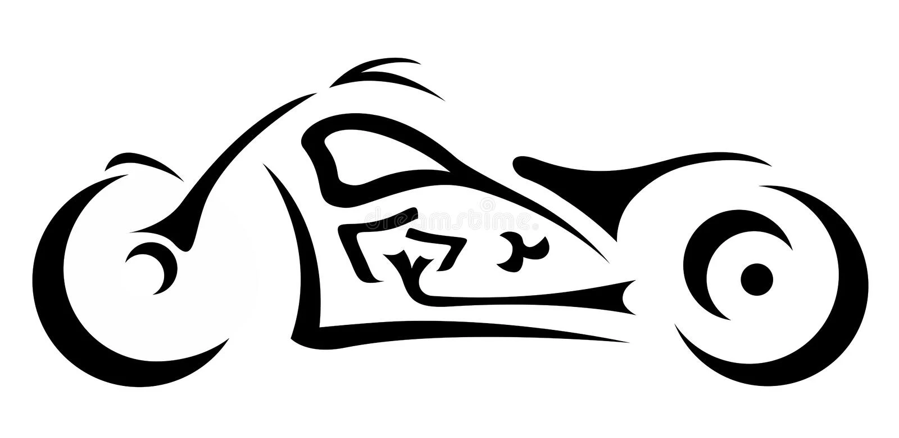
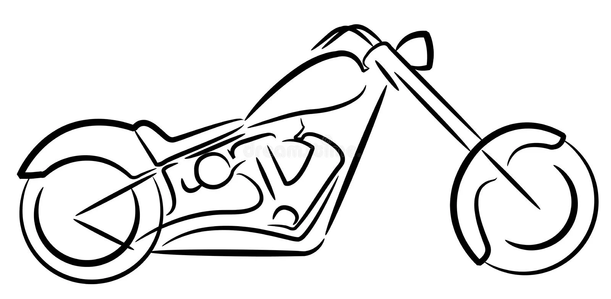
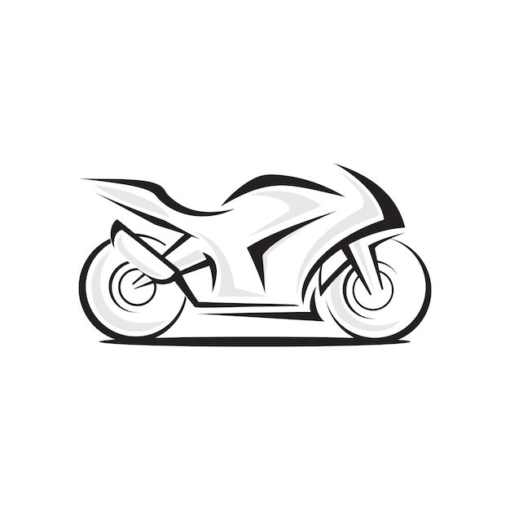
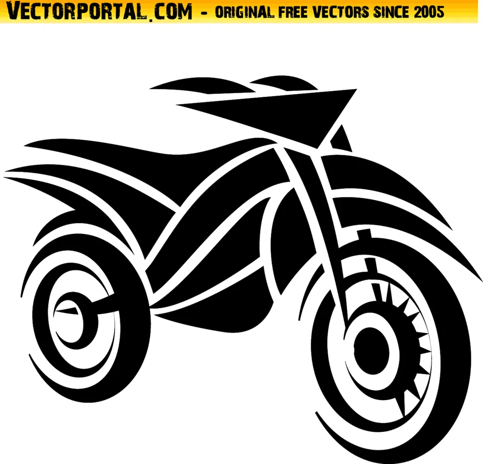
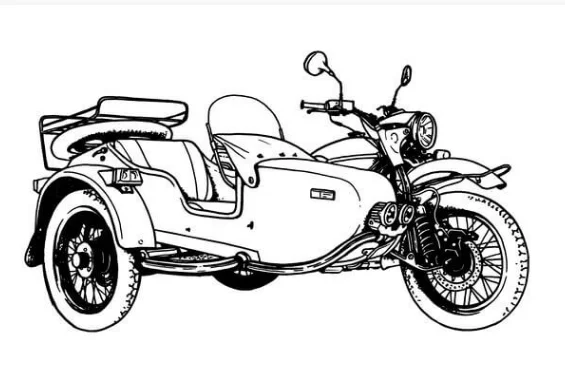

крейсер

ЧОПЕР

спорт

ЕНДУРО

СОВОК

крейсер
ЧОПЕР
спорт
ЕНДУРО
СОВОК
Риси, успадковані від батьків, допомагають байку добре поводитися на дорозі. Те, що у нього від класики залишився більш подовжений паливний бак, який за обсягом більше, ніж у спорту, дає можливість пересуватися на великі відстані без додаткових заправок. Це гарна якість, яке повинно враховуватися, якщо плануються довгі поїздки, де немає ніяких бензоколонок (адже на собі везти додаткове паливо не дуже хочеться).Також він відрізняється від звичайних спортивних мотоциклів своїми габаритами. На відміну від вузьких і коротких видів спорту гібрид володіє достатньою шириною, що обумовлює спокійну їзду. Звичайно, це не круїзери і не класичні туристи, які за своїм зручностей стоять на перших місцях серед інших мотоциклів, але спорт-турист теж нічого. На далеких відстанях не відчувається великої різниці. Також такі габарити роблять його більш стійким і керованим. На дорогах, де погане асфальтне покриття, необхідно тримати рівновагу.
Новачкам рекомендують Enduro. Полегшена конструкція не перевищує 110 кг. Агрегати призначені для їзди по бездоріжжю або по пересіченій місцевості. З переваг відзначають такі характеристики:
У спортивних мотоциклах деталі виготовляються з легкосплавного алюмінію і сталі. Це зменшує вагу байка і підвищує маневреність. Гальмівна система відрізняється надійністю і продуктивністю. Дискові гальма дозволяють водію різко загальмувати без заметів на швидкості. Покришки виконуються зі спеціалізованої гуми, стійкої до стирання. Пілот сидить верхи на мотоциклі. Така посадка зменшує опірність повітря і забезпечує підвищену керованість при заході на поворот. Під час їзди водій нахиляє корпус вперед. На високих швидкостях лягає на корпус. На гоночних байках відсутня пасажирське сидіння. Перед тим, як купити кросовий мотоцикл, ознайомтеся з технічними характеристиками. Зокрема з потужністю і об’ємом двигуна.